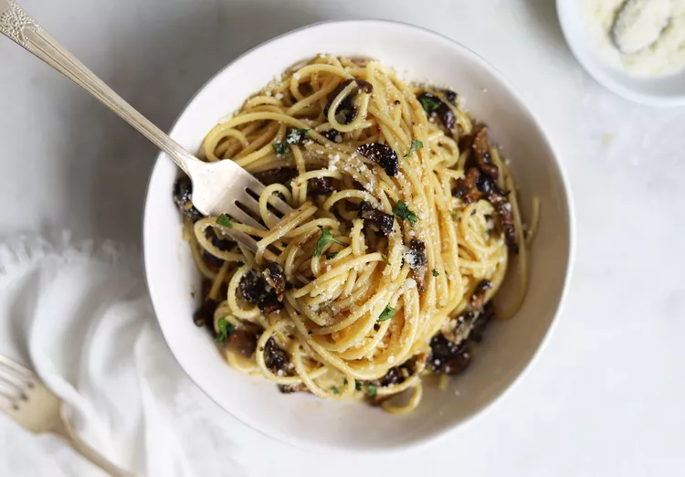

Bacon Mushroom Carbonara

Description
This dish is a mouthwatering fusion of flavors, marrying the classic Italian
pasta dish with flavolful bacon and earthy mushrooms. The dish boasts al
dente noodles coated in a velvety sauce crafted from cream, butter, Parmesan, and
black pepper. Crispy bacon adds a meaty kick, while sautéed mushrooms
contribute a rich, savory depth. This indulgent combination creates a
symphony of tastes and textures that elevates the traditional carbonara
experience. Bacon Mushroom Carbonara is a satisfying celebration of creamy
decadence, enhanced by the delicious interplay of bacon's
smokiness and mushrooms' earthy notes, making it a must-try for culinary
enthusiasts.
Ingredients
- Pasta, preferably fresh
- Bacon, preferably pre-diced
- Mushrooms
- Garlic
- Heavy Cream
- Butter
- Cooking Oil
- Salt
- Pepper
- Italian Seasoning
- Shredded Parmesan
Steps
- Dice the garlic and bacon (if needed), and chop up the mushrooms.
- Heat a saucepan with a litle cooking oil to medium-high heat.
Once hot, add and cook the bacon until it begins to turn brown.
- Add the mushrooms to the saucepan. Cook the mushrooms until they begin
to turn brown. If using dry pasta, bring a pot of salted water to boil,
and set the pasta in when boiling. Cook the pasta until al dente.
- Add the garlic to the saucepan and roast for about 30 seconds. Also add
salt, pepper, and Italian Spices now.
- Add your heavy cream and butter to the saucepan now. Stir well.
- If using fresh pasta, bring a pot of salted water to boil, and add pasta
while boiling. NOTE: fresh pasta only needs about 90
seconds to fully cook.
- Bring the sauce to a simmer and let it simmer for a few minutes to thicken.
- Once the pasta is done and the sauce has thickened a bit, add the pasta and
some pasta water to the saucepan. If you add too much water, let the sauce
simmer a bit to re-thicken the sauce.
- Serve in a deep bowl. Spread shredded cheese and freshly ground pepper to
individual bowls for taste.
Home